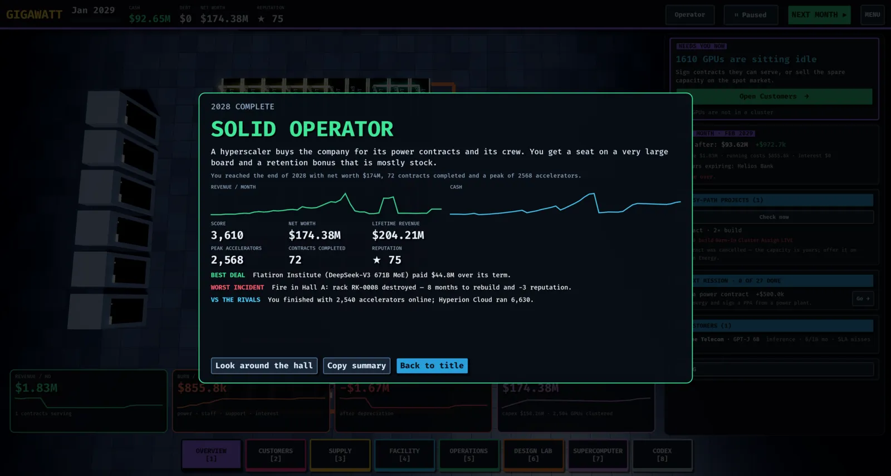
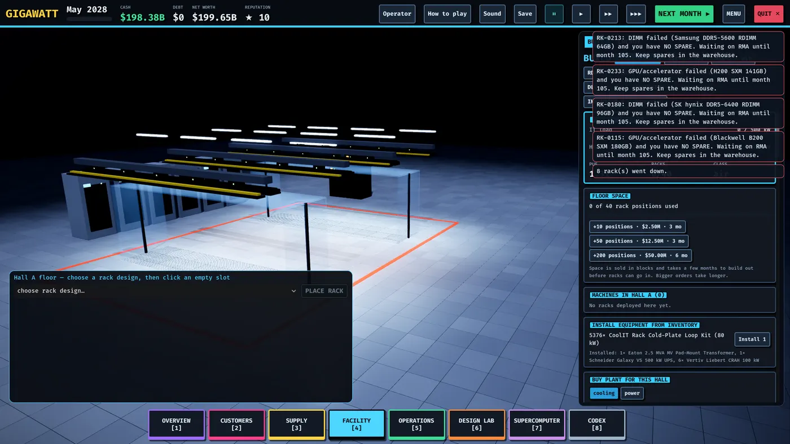

Strategy tips
Habits that separate a thriving AI factory from a beautiful hall full of idle GPUs. (Deliberately qualitative — balance numbers shift with tuning, the habits don't.)

Buy before you need
Lead times and allocation punish just-in-time thinking. Order transformers, plant and racks for the contracts you expect, not just the ones you've signed. When a keynote announces a part that changes your market, a pre-order is a cheap place in the queue — you can cancel most of it back if plans change.
Grow the boring parts first
Power and cooling cap everything. Expand the feed and the cooling plant ahead of the racks that will use them, and keep both gauges out of the red zone before you deploy. A second hall takes longer than you think — start it before you need it, and use it to separate air-cooled and liquid-cooled fleets.
Match hardware to workload
Memory capacity and bandwidth decide inference economics; compute, scale-up domains and fabric decide training economics. Read the contract checks before buying anything, let the "what you need to buy" box do the arithmetic, and don't buy premium fabric for inference or starved memory for serving.
Utilization is the business
Idle GPUs still burn power and depreciation. Put every idle online rack on the spot market, chase the ramp window on signed contracts, and prefer renewals over hunting for fresh customers — delivered contracts compound reputation and bring follow-on offers.
Run it like an operator
- Keep the spares shelf at the advised level; the RMA months you skip are the outages you avoid
- Hire ahead of the fleet; understaffed sites fail more and repair slower
- Choose burn-in and maintenance policies deliberately — shipping dead GPUs and skipping prevention both cost more than they save
- Two carriers on diverse paths, N+1 power before high-SLA contracts
Mind the money
Watch the Next month preview before committing cash: deliveries, burn-ins, completions, expiring offers, warnings. Watch runway and never let cash go negative for long — bankruptcy is a short walk from one over-ordered quarter. Borrow to build earning capacity, not to cover burn; interest accrues monthly whether the GPUs work or not.
Sell hardware on a cadence
Under the yearly cadence, GPUs lose value to successor generations faster than to wear. Refresh on rhythm, reassign the previous generation to inference or spot, and sell racks while residual value is real. A fleet that never refreshes ends up running hardware no customer wants to pay for.
Hedge what you can't control
A PPA sized to your steady load turns energy crises into non-events; over-committing turns them into monthly losses. Blend contract kinds (training and inference) and customers so a default or a demand dip doesn't idle the campus.
Learn the stack
The Codex's "Datacenter 101" verdicts tell you whether you need each concept right now — read them, click Show me where, and close gaps in order. Missions pay you to learn the whole stack; finish the Learning path before you decide which habits to skip.

Keep it boring
The endgame scoring rewards net worth, reliability and scale — and all three come from the same place: racks bought, filled, refreshed and sold on schedule, with no fires, no outages and no missed ramp windows. Spectacular is what it looks like when you didn't prepare.
Related: Incidents and resilience · Money and operations · Hardware roadmap.
Found a mistake or something missing? Edit this page on GitHub or ask in Discussions.